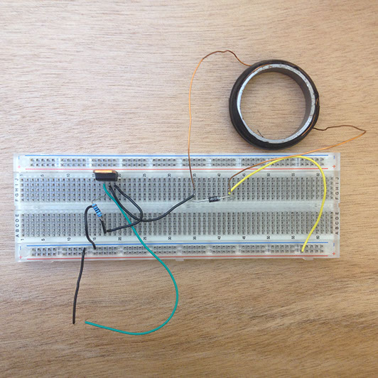

![INTRO
With the combination of technology in wearables becoming ever common, the possibilities of what our surroundings and sensors can tell us becoming limitless. Listen is a design that was created in an attempt to engage with the users surrounds, in a way that interprets ambiance in an alternate state. Behavior such as intrigue, fascination and discovery are things most adults lose in the process of growing up. With age, expectations of the extraordinary typically diminish, and the environment around us becomes uniform in the terms of ordinary. With the help of ‘Listen’, these static environments can be redefined and hopefully inspire those lost feelings of childhood. PROCESS
My approach to this project was very open minded as id never worked with wearables, and my knowledge of programming was still in the basic stages. Initially I began researching into existing projects that combined the craft of textiles with the functions of electronics and programming. Limiting my research to wearables was not an option for me, as a great passion of mine lies within furniture and lighting, thus I felt this would allow me to think outside the context and visualize a broader scope of possibilities. For the first time as a student I had been heavily encouraged to reflect on the decisions I was making and the thoughts I was pursuing through reflection. This is something that is rather difficult for me, but in this semester it has proven to be a useful tool when figuring out and combining ideas. Looking introspectively to this project was also a big part of my process, as a lot of the foundations of my design was built on the way in which I perceived my own likes and dislikes, and writing down and analyzing this information seemed to work for me when trying to develop my concept. TECHNOLOGY
What eventuated from a semesters work, is the ambient visualiser called Listen. By combining an inbuilt microphone to an electromagnet, tiny little ferro particles are stimulated to create landscapes based off intensities of the users audio surroundings. By using an Arduino, the signal received by the microphone is processed into different groups of frequencies. Each frequency is then assigned a different intensity of magnetic pulse, which then creates as array of ever changing sceneries at your very own wrist. CONCLUSIONS
This project is not only based around visualising sounds, and seeing interesting forms. It is more so an attempt at capturing a feeling of excitement and surprise within the natural world. Aside from the concept, this project has challenged my abilities within programming and processing, and given me a new perspective on my design process for the future. By coming to TU/e I knew I was undertaking a challenge, and I knew id be pushing myself out of my comfort zones. I wanted to learn new skills and I wanted to gain a wider perspective on design through doing and experimenting. The project that I undertook, thankfully revolved heavily around researching and experimenting with new fields of expertise such as textiles, programming and electronics. As I come from a very hands on design background there were some difficulties along the way when working on programming and electronics, but I felt as if it was like learning a new language, which is something that just takes time in understanding. Despite finding these areas to be incredibly challenging, I did however persist with grasping the basics of Processing and Arduino. As I've realised in my time here that I would love to create interactive products and installations, I feel as though I will continue to advance my skills in these areas for years to come. The great thing about learning these types of skills in TU/e has been that just about every student already has a great deal of knowledge in regards to coding. Yet this was also occasionally a hinderance, as I didn't always feel comfortable asking some of the more basic questions. Thankfully when exploring I found a lot of the information needed to be incredibly accessible, and was usually explained in depth online. As both of these platforms are generally open sourced, I found there to be a lot of coders who would be uploading interesting, and sometimes very relevant projects online, with incredibly detailed instructions. This served beneficial as many of the codes I found resembled closely to that of audio processing and visualising. After a semester of building my skills in writing and understanding code, apart from learning these basics the most valuable thing to realise was that a lot of what I want to achieve has already been coded. Though a code that I find may not be used in exactly the same context, meaning, or purpose, I discovered that there is so much that can be transferable and interchangeable. when applying my skills to my project it was often frustrating as to why things wouldn't tend to work, for instance when working with muscle wire, or just making silly mistakes such as connecting the wrong pins. But as soon as something I made was actually a success, I couldn't have been happier. The first time that I was able to get the ferro particles to spike up was a pivotal part of my project. Seeing the reaction from such basic components, and then developing it to the point of completion was exciting, but was also time consuming in retrospect. I feel as though I should have done much more experimentation with different strengths, sizes and directions but for what ever reason I couldn't find the time. Having my focus set on completing a single coil that could fit into a watch face was a goal that I set for myself, as I wanted to be able to have somewhat of a finished concept. In hindsight perhaps the experimentation and further development would have been more important, than to create a potentially infeasible product. But I feel the path I followed best suited the challenges I set out for myself in my PDP, and gave me a wide range of insights at the end of the day. In my PDP I stated that I wanted to learn programming, electronics as well as develop a product that could give the user an experience that would connect with them on an emotional level. When writing my vision I was able to imagine a future that interacted with people on a much greater scale. Seeing foot paths light up based on the pressure of each foot step, or creating light projections in the sky visualising wind patterns, was all a means to excite the user through unpredictable experiences. Another layer of my train of thought was that I wanted to create a connection between the natural environment and the man made environment. By doing this my goal was to demonstrate the beauty of what is already in existence around us, and try to heighten the experience so that the user could reconnect. Using the power of natural elements such as pressure, wind, sound etc. were all ways in which I felt could give great joy to an audience. When looking into my project I came up with many different concepts and paths, but what Ive realised thats remained has been utilising natural elements that we experience on a daily basis, that have seemed to have lost their appeal. The background behind this concept was based off my own self reflection, and experiences. Something that i’ve come to realise over time has been that its the small things in life that make up the strongest memories, and experiences. Holding onto these moments are impossible, but thats just what makes them all the more special. ‘Listen’ has been my attempt at reconnecting people to their surroundings, in a hope that they can realise and appreciate the beauty thats constantly around them. At the conclusion of my project I feel as though my process allowed me to cover many different ways in which my chosen elements (movement and sound) could have been applied to a users experience. With this being said I feel as though I was able to closely connect my vision to my concept, and by constantly thinking back to my PDP enable myself to move forward in a consistent direction. This is something that I feel I will utilise in future projects, as I found relating my direction to a context and a bigger picture was incredibly beneficial. As this was my own interpretation of how the user could experience their surroundings, I didn't feel user testing would benefit the project at the time. By discussing this project with a handful of my friends I was able to get their views on how the technology could be applied in different forms. Necklaces, pendents and headphones where just a few suggestions, though I felt that these options were lacking substance. With a watch I feel that they inherently have a deep emotional tie to a user, and is something that is not considered a throw away item. The older it becomes the stronger the connection gets, and with each perpetual cumulation of stimulus the bond between the user and Listen would only become greater. Measuring this bond in the time frame I had, I feel would have been impossible. There was also the issue of my prototype not being completed to a degree that would allow the user to experience Listen in its intended form. In hindsight, creating a prototype that wasn't incorporating magnets and ferro particles, but just for user testing purposes consisted of LED’s, would have been a quick way to get some basic feedback from the user. For instance seeing how they would react to their surroundings once the ambient sounds were defined and interpreted. This in itself has been a valuable lesson, as I feel I was too narrow sighted on trying to complete a working prototype. Instead of trying to refine my project, at this point I feel I should take a step back and explore ways of user testing. This would allow me to not only see how a user would respond to them becoming told of their surroundings, but would be able to validate or give new direction to the form Listen could take. Sketch Book](images/u1291-304.png)
........................................................................................................................................
........................................................................................................................................
........................................................................................................................................
........................................................................................................................................
...................